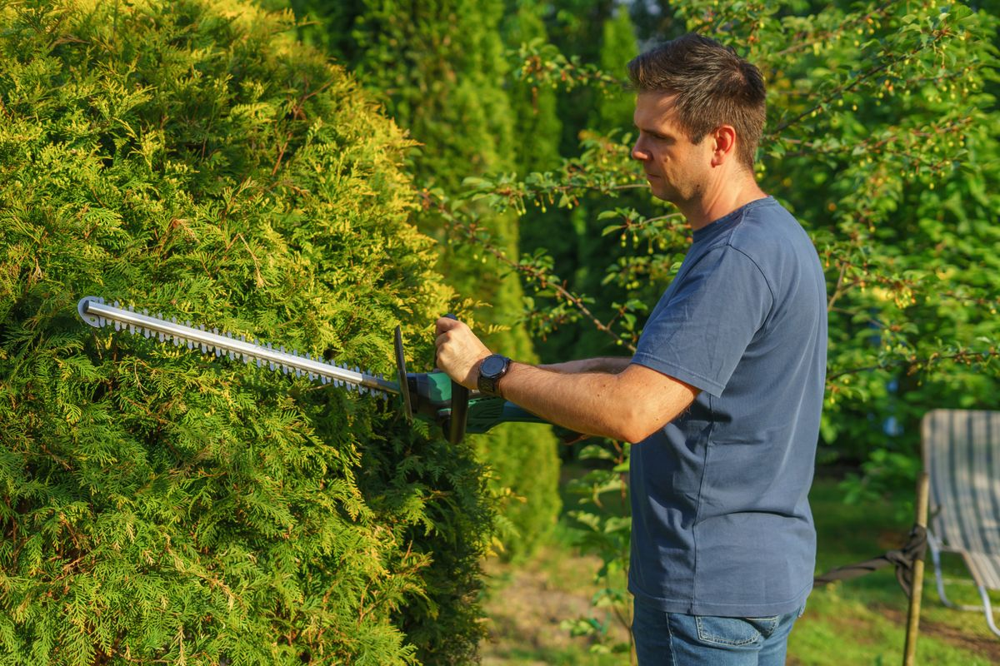
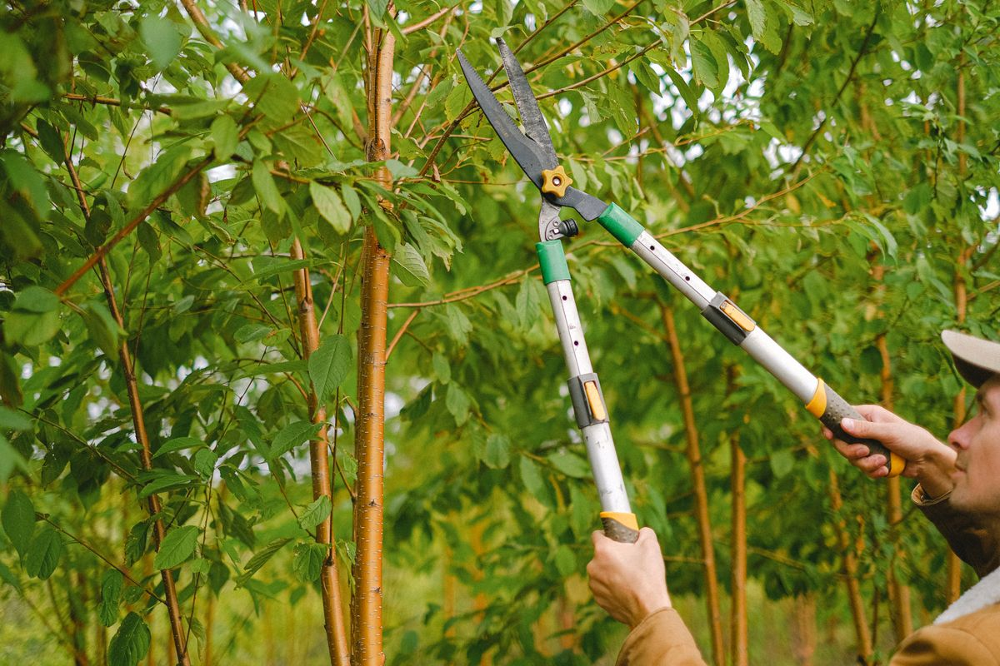
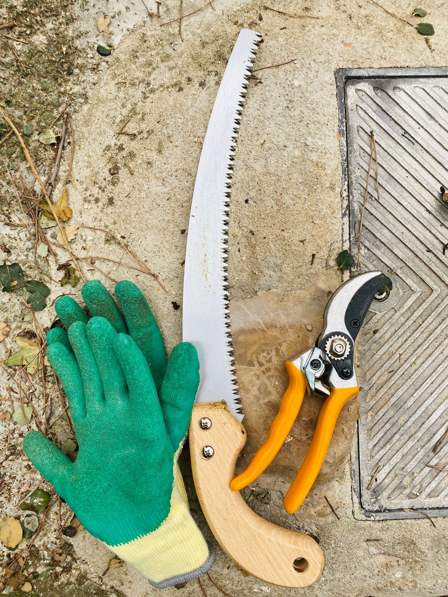

Visit Top Notch Tree Care
Tree trimming, removal, and lot clearing in Saraland, serving Mobile and Baldwin County.
Address: 415 Celeste Rd, Saraland, AL
Hours: Monday to Friday 6:30 AM to 4:30 PM.
Phone: (251) 786-1749
Email: ballen@topnotcharborist.com
Gallery



All gallery photos are stock photos, labeled as such. They show tree trimming work and tools, not this company's work.
Contact
Call (251) 786-1749 Email ballen@topnotcharborist.com
Top Notch Tree Care serves Saraland, AL. Questions? Call (251) 786-1749.